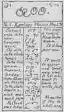

|
| A B C D E F G H I J K L M N O P Q R S T U V W X Y Z |
(Properly SU-KHAPMUH, a name of unknown origin and meaning).
A tribe of Salishan linguistic stock, the most important of that group in British Columbia, formerly holding a large territory on middle and upper Thompson River, including Shuswap, Adams, and Quesnel Lakes. On the south they bordered upon the Okanagan and Thompson River Indians; on the west, the Lillooet; on the north, the Chilcotin; and on the east extended to the main divide of the Rocky Mountains. They are now gathered upon a number of small reservations attached to the Kamloops-Okanagan and Williams Lake agencies, besides a small detached band of about sixty domiciliated with the Kutenai farther to the south. From perhaps 5000 souls a century ago they have been reduced, chiefly by smallpox, to about 2200. The principal bands are. those of Kamloops, Adams Lake, Alkali Lake, Canoe Creek, Neskainlith, Spallumcheen, and Williams Lake. What little is known of the early history of the Shuswap consists chiefly of a record of unimportant tribal wars and dealings with the traders of the Hudson Bay Company, which established Fort Thompson at Kamloops as early as 1810. The work of Christianization and civilization began in the winter of 1842-43 with the visit of Father Modeste Demers, who accompanied the annual Hudson Bay caravan from Fort Vancouver on the Columbia to the northern posts, and spent some time both going and returning among the Shuswap at Williams Lake, preaching and instructing in a temporary chapel built for the purpose by the Indians. About two years later the noted Jesuit missionary, Father P.J. de Smet, and hia fellow-labourers established several missions in British Columbia, including one among the Shuswap. These were continued until about 1847, when more pressing need in the south compelled a withdrawal, and for some years the Indians saw only an occasional visiting priest.
In 1862 a rush of American miners into the newly discovered gold mines in the Caribou mountains at the head of Eraser River brought with it a terrible smallpox visitation by which, according to reliable estimate, probably one-half the Indians of British Columbia were wiped out of existence, the Shuswap suffering in the same proportion. In the meantime the Oblates had entered the province and in 1867 Father James M. McGuckin of that order established the Saint Joseph Mission on Williams Lake for the Shuswap and adjacent tribes, giving attention also to the neighbouring white miners.
A few years later the mission had two schools in operation served by six Oblate fathers and lay brothers and four Sisters of Saint Anne. Father McGuckin was in charge until 1882 and was succeeded by Fr. A.G. Morice, noted for his ethnologic and philologic contributions, including the invention of the Dene Indian syllabary. Another distinguished Oblate worker at the same mission was Fr. John M. Le Jeune, editor of the "Kamloops Wawa", published since 1891 at Kamloops, in the Chinook jargon, in a shorthand system of his own invention.

Reduced Facsimile of First Page of Kamloops Wawa
From Filling's Bibliography of the Salishan Languages
In their primitive condition the Shuswap were without agriculture, depending for subsistence upon hunting, fishing, and the gathering of wild oats and berries. The deer was the principal game animal and each family group had its own hereditary hunting ground and fishing place. The salmon was the principal fish and was dried in large quantities as the chief winter provision. Among roots the lily and the camas ranked first, being usually roasted, by an elaborate process, in large covered pits. Considerable ceremony attended the ripening and gathering of the berries, which were crushed and dried for winter. The house was the semi-subterranean circular lodge, built of logs and covered with earth, common to all the interior Salishan tribes of British Columbia. The temporary summer lodge was of poles covered with mats or interwoven branches. As in .other tribes the sweat-house for steam baths on ceremonial occasions was an adjunct of every camp. The ordinary weapons were the bow, lance, stone axe, and club. Body armour of tough hide or strips of wood was worn. They made no pottery, but excelled in basket making and the weaving of rush mats. Dug-out canoes of cedar were used for river travel.
The tribal organization was loose, without central authority. Village chiefs were hereditary, and the people were divided into "nobles", commons, and slaves, the last being prisoners of war and their descendants, perhaps purchased from some other tribe. There were no clans and descent was paternal. The "potlatch" or great ceremonial gift distribution was not so prominent as among the coast tribes, but there were elaborate ceremonies in connexion with marriage, mourning for the dead, and puberty of girls. The dead were buried in a sitting position, or if the death occurred far from home the body was burned and the bones brought back for burial. Horses and dogs were killed at the grave, and the slaves of the dead man were buried alive with the body, after which a funeral feast was spread, for the mourners, above the grave. Women were isolated at the menstrual period, and twins, being held uncanny, were secluded together with the mother until old enough to walk. Their religion was animism, each man believing himself under the special protection of some animal spirit, which had appeared to him in visions during his puberty vigil. Most of their important myths centred about the coyote as the great transformer and culture hero.
Heathenism and old custom are now extinct, the entire tribe being civilized and officially reported Catholic, with the exception of one band of forty-five attached to the Anglican Church. In addition to the flourishing Oblate mission at Williams Lake, another under the same auspices at Kamloops is equally successful. Besides their own language, they use the Chinook jargon for intertribal communication. The official report (1908) for the Williams Lake band will answer for all: "The general health has been good. Their dwellings are clean and premises kept in a good sanitary condition. Farming, stock raising, teaming, hunting and fishing are the principal occupations. They have good dwellings and stables, a number of horses, cattle and pigs. They are well supplied with all kinds of farm implements. Most of the children have attended the Williams Lake industrial school. They are industrious and law-abiding and making good progress. A few are fond of intoxicants when they can procure them. As a rule they are moral".
BANCROFT, Hist. Brit. Columbia (San Francisco, 1887); BOAS, Sixth Rept. on Northwestern Tribes of Canada in Brit. Ass. Advan. Sci. (London, 1890): Ann. Rep. Can. Dept. Ind. AS'. (Ottawa); DAWSON, Notes on the Shuswap in Proc. and Trans. Roy, Soc. Canada, IX, ii (Montreal, 1892); MORICE, Catholic Church in Western Canada (2 vols., Toronto, 1910); PILLING, Bibliography of the Salishan Languages, Bulletin Bur. Am. Eth. (Washington, 1893).
APA citation. (1912). Shuswap Indians. In The Catholic Encyclopedia. New York: Robert Appleton Company. Retrieved April 26, 2010 from New Advent: http://www.newadvent.org/cathen/13764a.htm
MLA citation. "Shuswap Indians." The Catholic Encyclopedia. Vol. 13. New York: Robert Appleton Company, 1912. 26 Apr. 2010 <http://www.newadvent.org/cathen/13764a.htm>.
Transcription. This article was transcribed for New Advent by Jeffrey L. Anderson.
Ecclesiastical approbation. Nihil Obstat. February 1, 1912. Remy Lafort, D.D., Censor. Imprimatur. +John Cardinal Farley, Archbishop of New York.
Contact information. The editor of New Advent is Kevin Knight. My email address is webmaster at newadvent.org. (To help fight spam, this address might change occasionally.) Regrettably, I can't reply to every letter, but I greatly appreciate your feedback — especially notifications about typographical errors and inappropriate ads.